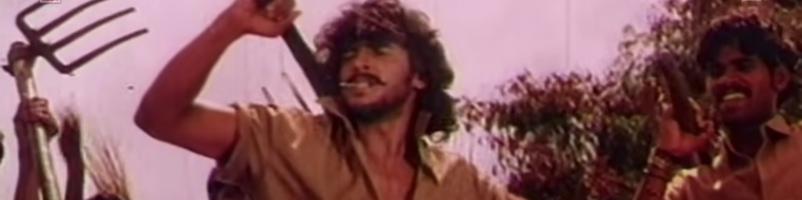
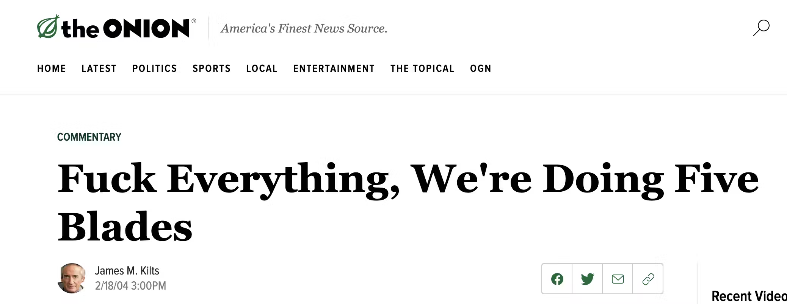
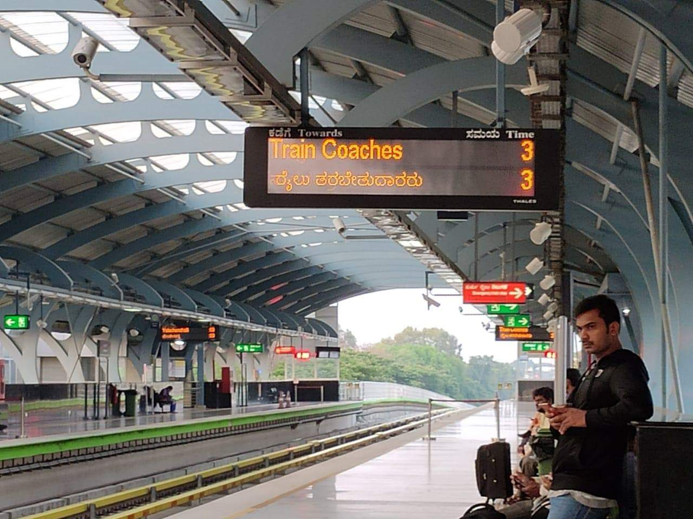
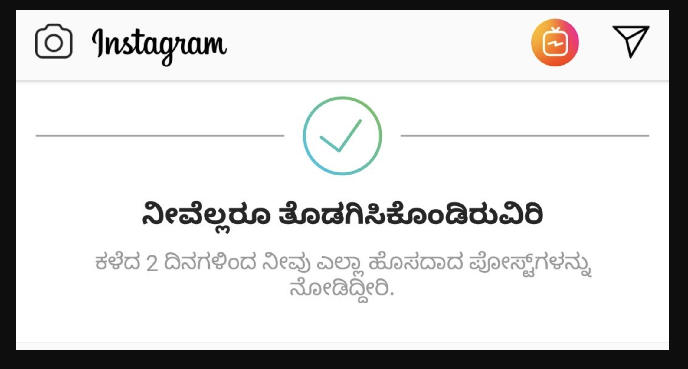

For A Kannada Movie
Mar 16, 2021

In the last five years or so a new kind of Kannada movie keeps getting made. These are often called “new wave” by critics in English newspapers like The Hindu. They are often made by an up-and-coming male writer/director who also plays the lead role opposite an unknown actress. Far beyond these surface similarities, however, is a phrase that unites them all; one that is uttered by viewers in Sadashivnagar as well as San Francisco — that “for a Kannada movie” (it’s pretty good).
This phrase annoyed the hell out of me when I first read it in someone’s Facebook comment. The rest of this essay is my attempt to understand that annoyance.
The English movie
Before we understand the new Kannada movies, we must understand English movies.
If you grew up in Karnataka in the 90s, especially outside Bangalore, most of this story is familiar to you. Back in the days before cable there was only DD9. We spoke Kannada almost exclusively, both at home and in school. We read our children’s stories in Sudha, Taranga, and Chandamama. Our world was small and when we watched films in the theater or on TV we just called them ‘films’ with no qualifier attached.
One day we watched Terminator 2: Judgement Day in a theater and barely understood anything, other than that we should feel sad when the robot drowned in the lava. Or your school took your whole class to a showing of Jumanji on a Saturday morning and you screamed in terror when the little boy’s hands started turning into sand. However it happened, we now became aware of a new concept: the ‘English film’.
The English film taught us lessons. The people who made these movies, wherever they lived, must be rich. After all, in their movies you could see life-life dinosaurs. They contained fantastic scenes such as a cow flying through a tornado and a bus jumping across a gap in something called a ‘freeway’. They treated real cars more roughly than I did my Hot Wheels. Surely, they must be very rich.
As we grew up we understood that it was possible for us to enter this land of riches, and one of the keys we needed was simply the English language. We started speaking English with our friends and made new friends who spoke nothing but English. We watched Friends and learned all the wrong lessons about relationships. We could now understand every single line spoken in an English movie, and some of us took pride in reciting entire scenes from memory.
We ran through an obstacle course after that, encountering creatures known as CET, JEE, GRE, TOEFL (foreign language, hah!), GMAT, and so on. The English films we watched allowed us to confidently bullshit our way through exams, ‘group discussions’, interviews or entire MBA programs. We got ourselves English-speaking jobs and moved to places like ‘Santa Cruz apartments’ in Bangalore or to Santa Clara, CA.
The details in the story may vary but the central plot remains the same. By the time these new-wave Kannada movies arrived, an entire generation of us had become estranged from our native tongue for a decade or more. Or maybe it was just me, as I drove an hour north of San Diego and paid $20 to watch one of these movies in a theater full of NRI Kannadigas.
New wave
At first I was simply bothered by technical flaws in these movies. Let me list a few.
One, the plot often tries too hard. Rangitaranga, the movie I went to see in San Diego, was a decent horror movie until the last 30 minutes or so when it went completely off the rails and tried to cram as many ‘twists’ as possible. It reminded me of the satirical story of the Gillette executive who gives up and decides that more blades is always better.

A good writer in any medium has the confidence to tell a single, cohesive story and the restraint to leave the audience wanting a little more. In Godhi Banna Saadhaarana Maikattu, it is the opposite. It has a perfectly good father/son plot (with a predictably great performance by Anant Nag) and yet it shoves in an entire 90-minute gangster movie plot for no reason, and the two threads don’t even intersect until the very last moments of the film.
Two, they use a variety of cinematography gimmicks ー camera upside down, shaky cam, superfluous blue/orange tinting ー but fail at the most basic shots. For example, in the scenes that need to be stitched together from multiple takes (such as two people sitting opposite each other and talking), the inexperienced actors don’t have the same energy or emotion in each take and that breaks the immersion that it’s a single real-time conversation. Even low-budget 90s Kannada movies do this very well as long as they employ trained actors.
Three, the language just feels clunky. This is the hardest one to explain for me, but often when I hear the dialogue in these movies it just doesn’t feel like something that a Kannada speaking person would say. Partly this is due to the accents of the actresses that are so soft and delicate that it’s obvious they never grew up speaking Kannada. More frequently it’s because the dialogue feels as if it was formulated first in English and passed through Google Translate, like many of the signs we’ve become used to seeing around Bangalore in recent years.
 
(More examples of this by @tapanguchi).
I have barely a leg to stand on when making this complaint, though, since I certainly would not be able to write this essay in Kannada.
It would be fair to dismiss all of these objections as pointless rambling by a film nerd. Technical flaws don’t necessarily prevent us from enjoying a movie. The language aspect, however, made me realize that there is something else missing from all these films. They have no Kannada soul.
What is this soul? It is the quality of being of a place, of belonging, and of being comfortable in one’s own skin. The 90s movies like Nishkarsha, BeLadingaLa baale have this soul. The early Upendra movies like A have this too, despite all their gimmicks. Mungaru Male has the soul, largely on the strength of its songs. Aa Dinagalu has it because the source material is so deeply tied to 80s Bangalore. Tithi, made by a first-time filmmaker, embodies the idea of Kannada soul because it tells the story of a Mandya/Mysore belt village without any attempt to filter it through a foreign sensibility.
In contrast the new wave films deliberately set out to be ‘different’ from all the Kannada films that came before, and this simply renders them a pale imitation of the Hollywood film. Even when they include a scene like a Yakshagana performance (in Rangitaranga) they adopt the gaze of an outsider, like that of an enthusiastic guide explaining the Mysore palace to a tourist from New York.
When people write the phrase “for a Kannada movie” they mean it as a compliment, not realizing that it’s an indictment.
Even on the surface level it’s a back-handed compliment. It’s no different than saying, “you’re dark-skinned but you’re so pretty!”. The compliment embeds an unspoken hierarchy in which the English or Hindi movie is assumed to be usually better, and the Kannada movie can only compete at the Ranji trophy level.
At a deeper level it is an indictment of us. It betrays our desire that our art must be judged by outsiders to be worthy. The older I get the more I have come to reject that view. Art must be judged solely, individually, by how deeply it moves us, and art made close to home has the greatest capacity to do that.
The lack of soul is not the fault of the filmmakers. They are just like us in the audience who have seen our own Kannada souls erode over the years. Some of us deal with it by leaning hard into the Kannada identity ー joining the Kannada Rakshana Vedike, becoming a ‘federalist’ in our politics and twitter bios, and pointing out Hindi imposition wherever we may find it. Some go the other way, pursuing the fool’s errand of assimilation into the West. Sampath from Hassan becomes Sam in California.
The majority of us end up in the middle. We lose our ability to write in the Kannada script, then we are unable to read anything more than a signboard. Our lives are now much more cosmopolitan. We watch shows on Netflix and expertly discuss the nuances of American cultural questions raised by them. In the back of our minds we are dimly aware that the waves coming from the west are slowly erasing the alphabets of our native language from our minds, as if they were drawn in sand, but we aren’t sure what to do about it.
Thus when we hear that there’s a new kind of Kannada movie and it’s playing in San Diego or San Francisco or London we go to see it eagerly, hoping it will transport us to the 4:30pm DD9 movie on a Sunday evening in our childhood, back to a time when it didn’t feel like we were straddling two canoes with one foot in each and barely holding on. We are disappointed, because the new wave movie does nothing to help us find our lost Kannada soul, because the people who made it suffer from the same ailment as we do. We log onto Facebook and write, “Amazing! For a kannada movie, …”.
Epilogue
Everything I’ve written in this essay has already been said better by this song.